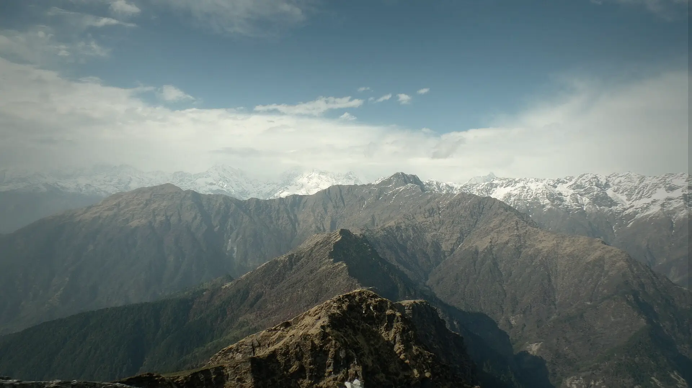

01Day 1 · Sari · 2,000 mkm 0.1
A village above Ukhimath
225kmFrom Dehradun · 7–8 h by road
Sari is a village in the Ukhimath block of Rudraprayag district, at about 2,000 m. The trek starts from here.

Photo: Rahul upreti, CC BY-SA 4.0चंद्रशिला · Rudraprayag, Uttarakhand
The trek in one line, and what you can do with it.
A lake, a long meadow day, the highest Shiva temple of the Panch Kedar, and a view of the highest peaks of the Garhwal range.
6 stops on the map, then the climb. Scroll the stops and the map follows.
01Day 1 · Sari · 2,000 mkm 0.1
225kmFrom Dehradun · 7–8 h by road
Sari is a village in the Ukhimath block of Rudraprayag district, at about 2,000 m. The trek starts from here.
02Day 2 · Deoria Tal · 2,400 mkm 4.0
4kmToday · 3–4 h, steady climb
A short climb through forest brings you to Deoria Tal, a lake at about 2,400 m on a ridge top.
03Day 3 · Baniya Kund · 2,600 mkm 22.0
18kmToday · 5–6 h, the long day
The longest day: from the lake across Rohini Bugyal and through forest to Baniya Kund, near Chopta.
04Day 4 · Tungnathkm 27.2
5kmFrom camp · On the mapped trail
An early climb above Chopta to the stone temple of Tungnath, the highest of the five Panch Kedar temples of Shiva.
04Day 4 · Chandrashila · 3,700 mkm 28.1
+230mFrom Tungnath · About 1 km
A last steep kilometre above the temple to Chandrashila at about 3,700 m, the high point of the trek.
04Day 4 · Baniya Kund · 2,600 mkm 33.9
12kmToday · There and back, about 6 h
Back down past the temple and Chopta to camp at Baniya Kund.
Best in Mar–Apr.
Dark: the months the trek’s sources call its best. Mid: possible. See all treks in March.
Base prices from 5 operators’ own pages, per person. GST and travel are often extra. Treqz sells nothing.
The practical things, then the questions people ask.
Operators get the permits, and the cost is in the trek fee. Carry ID and a medical certificate.
Bikat AdventuresAbout 33.9 km of walking over 5 days on the trail.
The highest point is 3,700 m, about 1,650 m above the start.
Its sources grade it Not graded.
Mar–Apr. It is also possible in May–Feb.
₹5,500 to ₹9,500 per person: base prices from 5 operators' own pages. GST and travel are often extra.
Jio and Airtel work all along the trail.
Operators get the permits, and the cost is in the trek fee. Carry ID and a medical certificate.
No ATM in Sari or Chopta. Ukhimath has plenty of ATMs.
Padded jacket (−10 °C), Thermal inners, 1 set, Fleece or woollen layers ×2, Trek pants ×2, Full-sleeve T-shirts ×3, Rain jacket or poncho, Woollen cap and balaclava, Gloves. The full list is on the 3D page.
It is possible: its sources list Dec–Feb as workable, with snow and cold to plan for.
Madmaheshwar, Satopanth Tal, Kuari Pass, Pangarchulla, Valley of Flowers.


Treks in March · Treks in April · Treks in Uttarakhand · 5 Day Treks in India · Treks in India Under ₹10,000 · Chopta Chandrashila vs Kedarkantha · Chopta Chandrashila vs Madmaheshwar · Chopta Chandrashila vs Satopanth Tal · Chopta Chandrashila vs Kuari Pass · Free trek finder · All treks in 3D